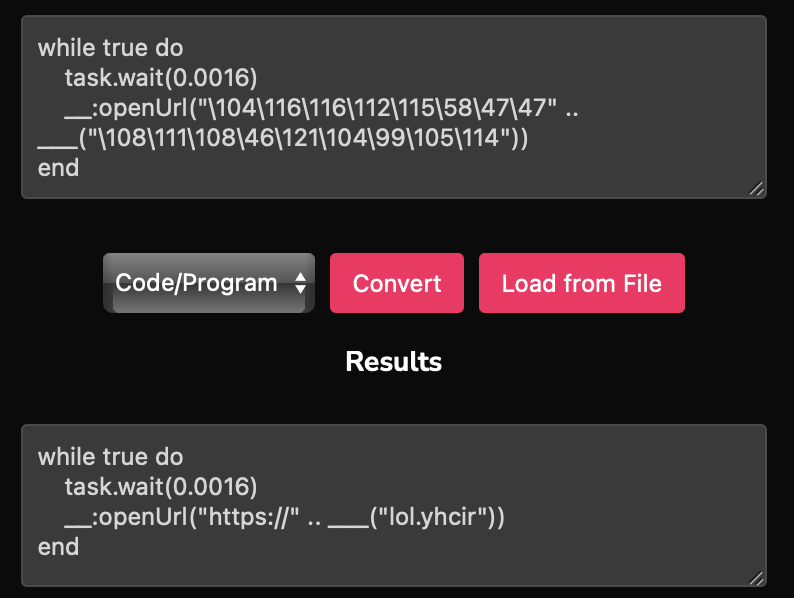

An introduction to code de-obfuscation with Roblox Lua
Recently, I engaged in a discussion within my community about de-obfuscating Lua code. This blog post was requested after many were puzzled about how supposedly "random-looking" characters and invalid-looking syntax could possibly result in non-fault code being executed.
In this blog post, we will therefore examine a short code sample which will make the code in your brain start working, in order to potentially think about de-obfuscating larger scripts.
Although this post uses a small extract in Lua as an example, it is still relevant to other scripting/programming languages, as the same techniques of obfuscation are usually used.
So firstly, let us get the most basic thing out of the way:
What even is obfuscation?
In pure English definition, obfuscation (mass noun) is the action of making something obscure, unclear, or unintelligible.
In the same way when applied to code, obfuscation is used to prevent source code from being easily read or understood. This can be done for a multitude of reasons, usually when an author wants to protect a valuable or proprietary implementation but is forced to distribute human-readable code (e.g., many Roblox scripts must be shared as plain code). Authors will garble identifiers, inline constants, or add convoluted logic to hide original formulas. However increasingly, this technique has also been used to make it harder for defenders to reverse-engineer genuinely malicious scripts.
It is a common misconception that obfuscation completely hides source code from other people. In reality, obfuscation simply makes the code harder to read and understand, but with eough effort, it can often be de-obfuscated (as will be demonstrated by this blog post).
Our starting point
The code above was actually used as a malicious troll by opening inappropriate links using a vulnerable Roblox service, but for the purpose of this blog post it has been adapted to be friendly.
At first glance, the code above may seem perplexing due to the string concatenations and inconsistencies in delimiters, the mixing of ASCII character codes with regular strings, and seemingly random and confusing mathematical expressions. However, by breaking it down line-by-line, we can uncover its hidden functionality.
Lines 1-4
Lines 1-2
local t = tonumber
local _ = {1,{6,{7,{{{getfenv()[('t' .. 'a' .. 's' .. 'k')], 9}}}}}}[t(2)][t("2")][2][1][1][1].wait
To a Lua programmer of any level, the indexing and nested literals look intentionally arcane, but it is straightforward once you break it down.
The code starts by aliasing tonumber to t so that calls like t("2") return the numeric index 2. The huge nested table literal is just a container filled with garbage values: by indexing into it with t("2") and other numeric keys, the code eventually reaches a value that is getfenv()[('t' .. 'a' .. 's' .. 'k')]. In other words, the expression builds the string "task" from 't' .. 'a' .. 's' .. 'k', looks that name up in the global environment returned by getfenv(), and then indexes its "wait" field.
Concretely, the whole expression is a delibereately obfuscated way to reference task.wait - Roblox's yielding function. It primarily relies on two ideas:
- dynamically constructing string keys (e.g.
't' .. 'a' .. 's' .. 'k'→"task"), and - using the global environment lookup via
getfenv()or_Gto map that string to the actual global table.
Therefore, the two lines above simply become local _ = task.wait.
Line 3
Once again, this line uses the same ideas that we mentioned in the previous two lines.
We can immediately omit the parenthesis surrounding the entire expression since it is completely useless and serves only as visual clutter. In short, (𝑥) ≡ 𝑥. This isn't even unique to programming, the same applies in mathematics too.
The actual interesting part here then simply becomes getfenv()[string.char(103, 97, 109, 101)].
Since we already discussed the role of getfenv(), I shall explain what string.char does in this instance. string.char is a standard Lua function which accepts a variable amount of numeric arguments representing an ASCII character to convert them into one string. Each number provided to the function here represents an ASCII character:
103→"g"97→"a"109→"m"101→"e"
Thus, string.char(103, 97, 109, 101) returns "game".
Therefore our line has now transformed through this journey:
local __ = getfenv()[string.char(103, 97, 109, 101)].LinkingServicelocal __ = getfenv()["game"].LinkingServicelocal __ = game.LinkingService
This de-obfuscation shows how ASCII values paired with environmenty lookups can be used to obscure code, making it less readable but still functionally equivalent.
Line 4
This is yet another classic case of string concatenations trying to make things less obvious, but by this point we are hopefully used to this kind of stuff.
The .. operator concatenates strings, so 'r' .. 'e' .. 'v' .. 'e' .. 'r' .. 's' .. 'e' evaluates to "reverse", and thus our line simply tries to access that field from Lua's string library. And once again, there are two useless parentheses in this line which are only used for syntactic bloating.
Substituting our findings, our line is now local ___ = string.reverse.
Reflecting on the variables
With out findings substituted, we now have much cleaner code that looks like this:
| Cleaned up code with findings substituted | |
|---|---|
If you have understood everything so far, well done! And I am happy that at least one reader, you, has read all of this - considering most people's attention spans are really short these days.
But look where we are now! With the main variables and their values mapped out, we can now recognise the purpoise of each function or object in this code snippet.
Lines 5-8, the "while" loop
From hereon, we will dive into how the variables discussed previously are used in the script.
| While loop section | |
|---|---|
Making this while loop simpler is just a matter of evaluating mathematical expressions in our head and just substituting the values of function returns back into this.
Line 5
This condition here, to really anyone, should be clear that it evaluates to true. This is because 0 will always be equal to 0, and when generalising: 𝑥 ≡ 𝑥.
Therefore this is just an infinite loop.
Line 6
Here, we are passing a mathematical expression, (5 ^ 2) ^ -2, as an argument to _. Since we know that _ from Lines 1-2 is task.wait, we are simply calling it here.
Let us however break down the math before substituting it in:
In Lua, the ^ symbol represents the "to the power of" mathematical operation.
5^2calculates to25, since 5 to the power of 2 is the same as 5 ✕ 5, which is 25.- Then
25^-2is calculated, which mathematically requires us to first find25^-1and then square the result of that. This is because of the reciprocation rules in mathematics. - To find
25^-1, we take the reciprocal of25. A "reciprocal" is 1/𝑥, where 𝑥 is the number in question. 25^-1is therefore the same as1/25which is0.04in decimal.- Remember that we are actually finding
25^-2, so we have to square the answer to25^-1:0.04 ^ 2==0.04 * 0.04==0.0016.
You can read more about mathematical reciprocals on Wikipedia.
Thus, our simplified maths result is 0.0016. Knowing that _ is a function - indicated by the parenthesis after it and an argument - we are calling task.wait(0.0016).
This therefore gives us the following code, and we are very close to the end!
while true do
task.wait(0.0016)
__:openUrl("\104\116\116\112\115\58\47\47" .. ___("\108\111\108\46\121\104\99\105\114"))
end
Line 7 - Embedded escape codes
Convert the embedded escape codes in the string back to regular characters using my online tool:

and thus we now have this line:
| Embedded escape codes replaced with regular characters | |
|---|---|
The final part
And remember that we previously discovered certain variables like __ and ___ to be the following:
| Previously identified variables | |
|---|---|
Thus the following line: "https://" .. ___("lol.yhcir") simplifies to "https://" .. string.reverse("lol.yhcir"), which becomes "https://" .. "richy.lol" and finally "https://richy.lol".
Therefore, our final code just looks like this:
| Manually de-obfuscated code | |
|---|---|
Congratulations, you have just de-obfuscated a script with one of the best de-obfuscation tools known to man: your human brain.
What this code does is uses Roblox's LinkingService to open my website from a vulnerable environment every 0.0016 seconds.